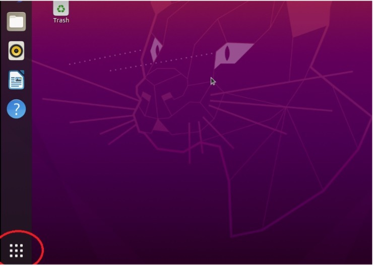
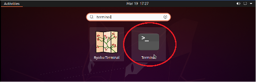

Appendix Overview
- Deployment Guide
- Full version of deployment guide can be accessed here (11 page)
- User Guide
- Full version of user manual can be accessed here (18 page)
- Elastic SIP Trunk Setup Guide
- Full version of user manual can be accessed here (4 page)
- Legal Statement
Deployment Guide
Below is a brief example of deploying our solution on an Ubuntu machine. Due to the length and readability of website, the Full version of deployment guide can be accessed here (11 page)
Prerequisites
- Docker
- GDebi
Ubuntu PC Deployment
- To deploy the IVR on an Ubuntu PC, you first need to make sure Docker and GDebi are installed. If you followed the Linode Deployment guide or have already installed these, you should not install them again.
- Now open a terminal by clicking on the applications button at the bottom left hand corner. 
- Then you can type in “terminal” and click on the terminal icon. 
- A black terminal pop-up will then appear on the screen and you can follow our Installing Docker install guide.
- If you do not have GDebi installed or you are unsure, you will need to install this too. This just makes downloading “.Deb” packages easy which is the format of the IVR program package.
- To install GDebi, run the following command from the terminal to update and upgrade your system’s packages.
$ sudo apt-get update && sudo apt-get upgrade
Then install “gdebi” with the following.
$ sudo apt-get uinstall gdebi
Note: You must also give the user running the program root permissions with Docker. You can do this creating a group for Docker.
After installing GDebi, you can then add your current user to the group.
$ sudo usermod -aG docker $USER
Now restart the PC or server before continuing.
Installing IVR Program Package
- Once Docker is installed, you then need to install the IVR program and UI.
- To do this open up Firefox and navigate to https://sourceforge.net/projects/gp-ivr
Then click the “Download” button to download the IVR program and UI.
A prompt will appear asking if you want to save the file in a location or “Open with” an application. Select the “Open with” option and make sure “GDebi Package Installer” is selected – it should be by default. Then continue with the installation by clicking “OK”.
Once downloaded, an installation pop-up will appear.
- Click on the “Install Package” button to install the program. This will take a couple of minutes.
- Once installed, close down the Firefox page and click on applications in the Ubuntu desktop.
- You can then open the GP IVR program by clicking the “GP IVR” button
This will open the UI which allows you to make modifications and view statistics about your IVR.
Please see the complete GP IVR Deployment Guide for more information on how to use the system.
User Manual
Likewise, below is a brief example of deploying our solution on an Ubuntu machine. Due to the length and readability of website, the Full version of deployment guide can be accessed here (18 page)
Introduction
GP IVR is an interactive program which allows the creation of an IVR system, a triage of questions through a telephone call that then redirects the user to the appropriate place or clinician. In current iterations of the system, only “yes” and “no” speech answers are allowed from the user.
In order to setup the system, you first need to start the IVR server from the IVR Server Status page. Once this is done, you must set up your telephone number provider (e.g. Twilio) SIP trunk settings on the SIP Trunk Settings page. Once this is done, you are free to generate an IVR, either choosing a project from your Voiceflow account or uploading a Voiceflow “.vf” file to the program.
After setting where to redirect users after they’ve been through the triage of questions, users will then be able to call the IVR through any PSTN number (mobile and landlines). Speech files for the IVR are generated automatically from your Voiceflow diagram text. You can however add your own voice files for each point in the IVR.
Analytics of your IVR system can also be reviewed easily with the Analytics page.
This manual will go through each of the pages individually, explaining every feature within the program.
Home Page
When first opening the application, you will see the home page which can be seen in the image above. From the home page you can navigate through the UI to find any section that you want to view. The pages that are directly accessible from the home page are:
- IVR Server Status
- Generate IVR
- Add Recorded Voice Files to IVR
- Analytics
- SIP Trunk Settings
- Redirect Settings
Each of these pages will be discussed later in this manual, and for reference of what each page does, you should look for the sections specifically for the relevant pages. In the top left-hand corner, there is a Menu button. Left clicking this will bring up a pop-up menu that will allow you to navigate all of the pages specified above. The Menu button is available from all pages, meaning all these main pages can be accessed from anywhere in the program.
There is also an Exit button on the menu which allows you to exit the application. A very key point is that it is safe to exit this application and exiting or closing the application will not turn off the IVR server. This means that an IVR set up will continue to run until either the computer is turned off or the IVR server is turned off in the IVR Server Status page.
Please see the complete GP IVR User Guide for more information on how to use the system.
Legal Statement
Below is the End User License Agreement of our project "GP IVR".
These Terms specify how you may use GP IVR, which is licensed by us to you, the End User, as an open-source solution.
-
End User License Agreement
1 About our Terms
These Terms specify how you may use the software named “GP IVR” (the App) which is licensed by us to you, the End User, free of charge. Your licence to use this App is subject to your prior acceptance of these Terms which you should read carefully before proceeding to use the App. Your use of the App means that you also agree to the terms of our Privacy Policy and our Cookie Policy. These Terms together with the Privacy Policy and Cookie Policy constitute the entire agreement between us relating to the App. We reserve all rights in and to the App not expressly granted to you under these Terms. References in these Terms to the App includes any changes to or enhancements of the App. If you have any questions about the App, please contact us by email chris.dai.19@ucl.ac.uk.
2 Definitions
Content means any text, image, video, audio or other multimedia content, or other information or material submitted to or otherwise contained in the App; Terms means these terms and conditions of use as updated from time to time under clause 11; Cookie policy means the policy, which governs how we use cookies in the Site; Privacy Policy means the policy, which governs how we process any personal data collected from you; We, us or our means Team 35 of COMP0016 20/21 at UCL. References to us in these Terms and You or your means the person accessing or using the App or its Content.
3 License
3.1 The App is for your personal use only and you agree that you are solely responsible for all costs and expenses you may incur in relation to your use of the App; and keeping your login and password (and other details associated with your account) confidential. We may prevent or suspend your access to the App without notice if we reasonably consider that you have not complied with any part of these Terms or any terms or policies to which they refer or any applicable law.
3.2 We grant to you a non-transferable licence to use the App on any computer and/or mobile device that you own or control. These Terms together with the Privacy Policy and the Cookie Policy shall govern all Content and materials accessible from the App. You are not entitled to transfer or sublicense your use of the App nor copy, reverse-engineer, attempt to derive the source code of, modify or otherwise misuse the App or any part thereof.
4 Ownership, use and intellectual property rights
The App and all intellectual property rights in it are owned by us. Intellectual property rights means rights such as: copyright, trademarks, domain names, design rights, database rights, patents and all other intellectual property rights of any kind whether or not they are registered (anywhere in the world). Nothing in these Terms grants you any legal rights of or in the App other than as necessary to enable you to access the App and upload Content.
5 Uploading information to the solution
You agree that we may collect, use and retain any and all personal data, as that term is used in data protection legislation (including the General Data Protection Regulation (GDPR) (EU) 2016/679), uploaded to the App by you or on your behalf. Our use of your personal data is set out in our Privacy Policy and you agree not to input sensitive personal data (also known as special category data). You agree that we may also collect and use technical data and related information, including but not limited to data about your device and system, to enable us to improve the App, facilitate the provision of any updates to you or otherwise support your use of the App.
6 Termination
These Terms shall be effective until terminated by you or us. Your failure to comply with any of these Terms will result in your rights hereunder terminating automatically.
7 Integrated applications
You may be able to access our App in connection with or via other third party applications, services and websites. You agree to use such third party applications, services or websites at your sole risk and that you shall not hold us liable for any such third party applications, services or websites.
8 Limitation on our liability
Except for any legal responsibility that we cannot exclude in law (such as for death or personal injury), we are not legally responsible for: any losses that (a) were not foreseeable to you and us when these Terms were formed or (b) were not caused by any breach on our part; loss of data; loss of use, whether as a result of computer viruses, spyware or malware of any description or any material which might adversely affect the operation of any computer hardware or software or any communications network which affects you as a result of accessing the App; business losses; and losses to non-consumers. In any event, we shall only be liable for direct losses (excluding indirect losses) and shall not otherwise be liable to you for any damage suffered by you unless, subject to the exclusions set out above, such damage has directly been caused by your use of the App in accordance with these Terms and, where applicable, the Privacy Policy and the Cookie Policy.
9 Events beyond our control
We shall have no liability to you for any breach of these Terms caused by any event or circumstance beyond our reasonable control including, but not limited to, strikes, lock-outs or other industrial disputes; breakdown of systems or network access; failures of or problems with the internet or a part of the internet; hacker attacks; virus or other malicious software attacks or infections; power failures; flood, fire, explosion or accident.
10 Rights of third parties
No one other than a party to these Terms has any right to enforce any of these Terms.
11 Governing Law
11.1 These Terms will be governed by and construed in accordance with the laws of United Kingdom. The courts of United Kingdom will have exclusive jurisdiction to settle any dispute which arises out of or in connection with these Terms.